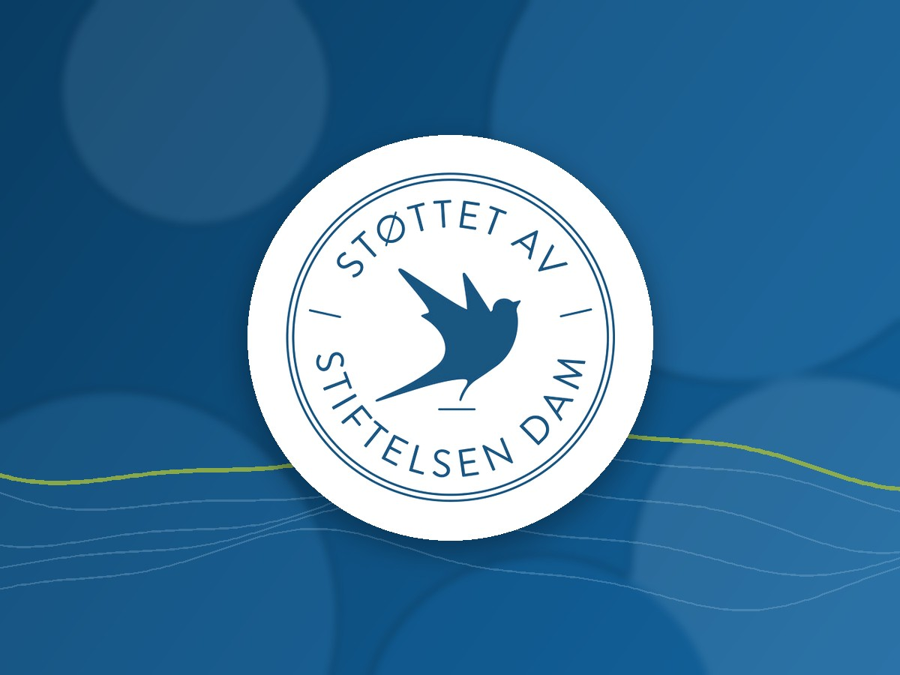
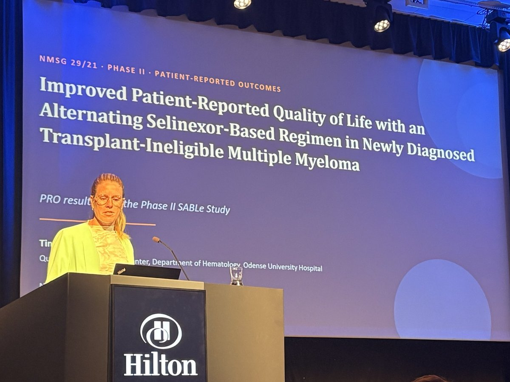
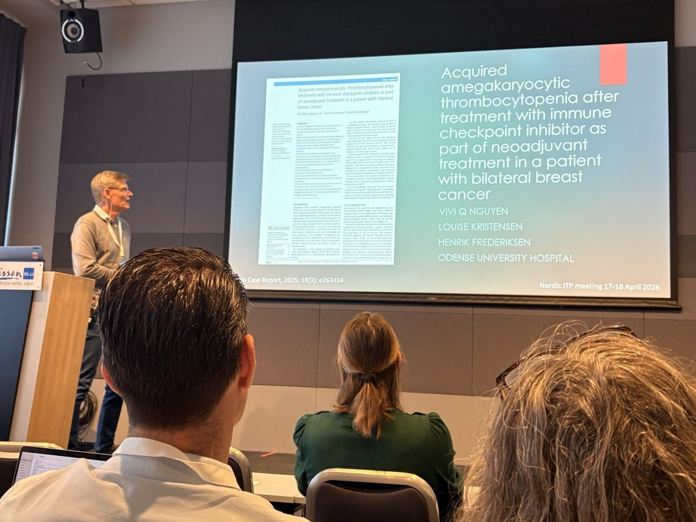

Nyheder
Møder, konferencer og præsentationer fra QoLRC.
-

Forskning i fokus på Hæmatologisk Afdeling
Kolleger fra hele Hæmatologisk Afdeling på Odense Universitetshospital samledes til den årlige eftermiddag Forskning i fokus, som Henrik Frederiksen stod for. Han præsenterede også konklusionerne fra MICRO-forsøget med methylphenidat mod træthed hos patienter med hæmatologisk kræft. Programmet omfattede akut leukæmi og hæmatopatologi, lymfom og cellulære terapier, myelomatose og amyloidose, hjemmebehandling og understøttende behandling, livskvalitet og populationsbaseret forskning samt benign hæmatologi og skrøbelighed. Hans Henrik Knudsen, som er patientrepræsentant i Lene Kongsgaard Nielsens livskvalitetsforskning i QoLRC, fortalte om betydningen af patientinddragelse i forskningen. Fra QoLRC præsenterede Henrik Frederiksen, Pia Pedersen, Tine Rosenberg, Anne Møller Clausen og Klara Rydahl deres arbejde.
-

SSQ-MM-valideringsstudiet præsenteret på ISOQOL 2026 i Prag
Helena Møgelbjerg Ditzel præsenterede en poster om den multinationale psykometriske validering af Steroid Symptom Questionnaire – Multiple Myeloma (SSQ-MM) hos patienter med immun trombocytopeni (ITP) og autoimmun hæmolytisk anæmi (AIHA) på den 33. årlige konference i International Society for Quality of Life Research (ISOQOL) i Prag. Studiet skal inkludere 180 patienter i Danmark, Norge, Sverige og Storbritannien og udvikler desuden en svensk version af spørgeskemaet.
-

Bevilling fra Stiftelsen Dam til REMNANT-studiets livskvalitetsdel
REMNANT-studiets delstudie om patientrapporterede oplysninger har fået støtte fra den norske fond Stiftelsen Dam gennem den norske blodkræftforening (Blodkreftforeningen). REMNANT er et nordisk randomiseret forsøg ledet af Oslo universitetssykehus, hvor behandlingen af nydiagnosticeret myelomatose styres af målbar restsygdom. Bevillingen støtter livskvalitetsanalyserne i studiets del 2, som udføres i QoLRC og ledes af Helena Møgelbjerg Ditzel.
-

Livskvalitetsresultater fra SABLe-studiet præsenteret på NMSG-mødet i Reykjavik
Tine Rosenberg præsenterede resultaterne for patientrapporterede oplysninger fra fase II-studiet SABLe (NMSG 29/21) på Nordic Myeloma Study Groups møde i Reykjavik. Studiet afprøvede et alternerende selinexor-baseret behandlingsregime hos patienter med nydiagnosticeret myelomatose, som ikke kan tilbydes stamcelletransplantation, og patienterne rapporterede forbedret livskvalitet.
-

QoLRC til det nordiske ITP-møde i Oslo
På det nordiske ITP-møde i Oslo den 17.–18. april 2026 præsenterede Henrik Frederiksen et tilfælde af erhvervet amegakaryocytær trombocytopeni efter behandling med en immun checkpoint-hæmmer som led i neoadjuverende behandling for bilateral brystkræft (BMJ Case Reports, 2025). Helena Møgelbjerg Ditzel præsenterede SSQ-MM-valideringsstudiet hos patienter med ITP og AIHA.